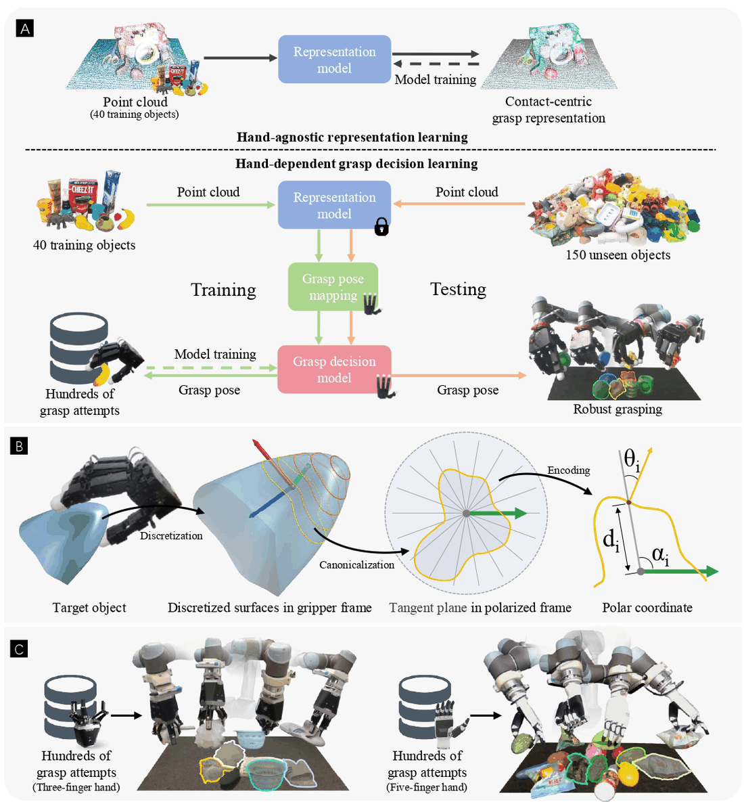

AnyDexGrasp is a framework for learning dexterous grasping across different multi-fingered robotic hands with very low data requirements. It splits grasping into two stages: a universal, hand-agnostic model maps scene geometry to intermediate contact-centric grasp representations (CGRs), and a separate hand-specific decision model is then trained per hand through real-world trial and error. This decoupling lets the system reach high success rates after only hundreds of grasp attempts on 40 training objects, rather than the millions of labeled grasps typical of prior methods. The authors frame this efficiency as comparable to human infant learning. It is validated on three structurally different hands (DH-3, Allegro, Inspire) in cluttered scenes with 150+ novel objects.
Two-stage decomposition: a hand-agnostic universal model produces contact-centric grasp representations (CGRs), separating scene geometry from hand-specific control. The universal CGR model is trained once on large-scale offline data and reused across all hands, so only the lightweight per-hand decision model needs real-world data. Hand-specific grasp decision models are learned via real-world trial and error, scoring/selecting grasps to fit each hand's kinematics. Generalizes across very different hand morphologies: DH-3 (3-finger underactuated, 4 DoF), Allegro (4-finger fully actuated, 16 DoF), and Inspire (5-finger underactuated, 12 DoF). Human-level learning efficiency: high performance from only hundreds of attempts on 40 objects, contrasted with human infants reaching 61.9% success at 8 months.
Achieves 75-95% grasp success across three different robotic hands in real-world cluttered scenes with over 150 novel objects. Improves to 80-98% success when training on more objects. Reaches this with only hundreds of grasp attempts on 40 training objects, versus millions of labels in prior approaches. Demonstrates a single hand-agnostic CGR model transferable to three structurally distinct hands (DH-3, Allegro, Inspire). Provides a public project page with categorized real-robot demos and an open-source code release.
Given a depth/point-cloud observation of a cluttered scene, it predicts contact-centric grasp candidates and selects a hand-specific dexterous grasp to execute on the chosen robotic hand, generalizing to unseen objects.
Figure is the paper's own teaser, captured from the paper or project page for personal study; PDFs/videos are not hosted here (buttons link out). Summary is my paraphrase from the abstract, full text and project page — see the paper for specifics. Credit: the original authors.